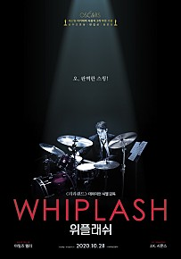

| 1 |
니모를 찾아서 |
|
호기심 가득한 아기 물고기 ‘니모’가 인간에게 납치되자 아들바보 아빠 ‘말린’은 상상초월 위험이 도사리고 있는 바다로 아들을 구하기 위한 모험을 떠난다. 건망증이 심한 수다쟁이 물고기 ‘도리’와 함께 떠나는 모험에서 ‘말린’은 과연 아들을 구해낼 수 있을까? |
클릭 |
| 2 |
메멘토 |
 |
아내가 살해당한 후,
10분밖에 기억 못하는 단기기억상실증에 걸린 남자가
사진, 메모, 문신으로 남긴 기록을 따라 범인을 쫓는 기억 추적 스릴러 |
클릭 |
| 3 |
위플래쉬 |
 |
뉴욕의 명문 셰이퍼 음악학교에서
최고의 스튜디오 밴드에 들어가게 된 신입생 '앤드류'
최고의 지휘자이지만 동시에 최악의 폭군인 '플레쳐'교수는
폭언과 학대로 '앤드류'를 한계까지 몰아붙이고 또 몰아붙인다.
드럼 주위로 뚝뚝 떨어지는 피,
빠르게 달리는 선율 뒤로 아득해지는 의식,
그 순간, 드럼에 대한 앤드류의 집착과 광기가 폭발한다. |
클릭 |
| 4 |
굿 윌 헌팅 |
|
수학, 법학, 역사학 등 모든 분야에 재능이 있는 ‘윌’(맷 데이먼)은
천재적인 두뇌를 가지고 있지만 어린 시절 받은 상처로 인해
세상에 마음을 열지 못하는 불우한 반항아.
절친인 ‘처키’(벤 애플렉)와 어울리던
‘윌’의 재능을 알아본 MIT 수학과 ‘램보’ 교수는
대학 동기인 심리학 교수 ‘숀’(로빈 윌리엄스)에게 그를 부탁하게 되고
거칠기만 하던 ‘윌’은 ‘숀’과 함께 시간을 보낼수록
상처를 위로 받으며 조금씩 변화하기 시작하는데… |
클릭 |
| 5 |
어벤져스:엔드게임 |
|
인피니티 워 이후 절반만 살아남은 지구
마지막 희망이 된 어벤져스
먼저 떠난 그들을 위해 모든 것을 걸었다!
위대한 어벤져스
운명을 바꿀 최후의 전쟁이 펼쳐진다! |
클릭 |